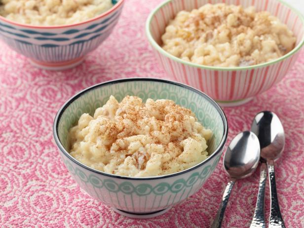

Sweet Rice Pudding

Description
This classic, comforting, creamy Rice Pudding recipe is made with just 5 ingredients right on your stovetop.
A delightful, easy dessert flavored with lemon and cinnamon
Ingredients
- 250g of rice
- 450g of sugar
- 6 egg yoks
- rasp of lemon
- 50g of butter
- 0,5l of water
- 1l of milk
- cinnamon
Steps
- In a pan, bring the water and rice to a boil. Season with a little salt and let it cook until the water dries up.
- After the water has evaporated, add the butter, lemon peels, cinnamon sticks and milk. Stir and let it cook for 30 minutes. Stir occasionally so it doesn't stick to the bottom. After 30 minutes add the sugar.
- Dissolve the yolks with the cup of milk. While stirring, add the yolks to the rice and when it starts to bubble, turn off the heat.
- After serving in bowls, take the sweet rice to the fridge. Once cool, sprinkle with cinnamon and it's ready to serve.